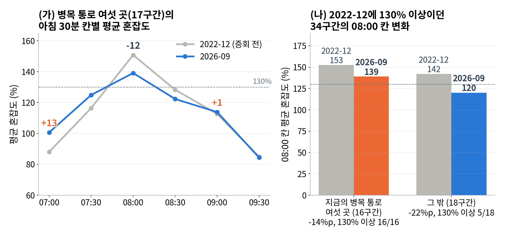
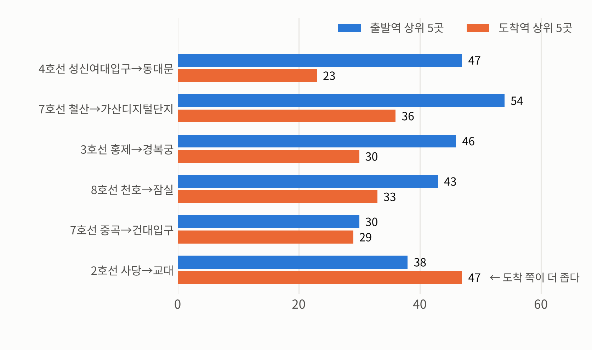

(가) 언제: 130% 이상이 몰리는 30분 칸 · (나) 어디에: 08:00 칸에서 130% 이상인 구간. 서울교통공사 혼잡도 2026-09 평일, 역·방향 557개. 130%는 2020년 서울교통공사 안내에서 “주의”(이동 시 부딪힘)가 시작되는 선. 증회: 서울시 「지하철 혼잡도 완화 대책」.
서울시도 이 시간대를 겨냥해 2023-04~2025-03 혼잡 시간대 열차를 5차례 늘림. 목표는 노선별 최고 혼잡도 150% 이하
3장담당 김민주레퍼런스 빅데이터캠퍼스 7~8쪽 (EDA)채울 것 없음. 그림은 시각화 노트북 eda_bg 칸
01. 연구 개요
선행연구
정부 대책: 노선별 최고 혼잡도 구간을 찾아 그 30분 칸에 열차를 더함
① 조사
정기교통량조사
노선마다 30분 칸별 혼잡도 측정
서울교통공사, 분기별
➜
② 진단
노선별 최고 혼잡도 구간 하나
예: 4호선 성신여대입구→한성대입구, 08:00~08:30, 186%
2022년 조사
➜
③ 처방
그 30분 칸에 열차 증회
예비열차 증회 5차례 (2023-04~2025-03), 신규 전동차 증차
2026년 시차 출퇴근 교통비 환급 추가
➜
④ 결과
“150% 수준 유지”
4호선 185.5% → 143.6% (2025 4분기)
헤럴드경제 2026-03-11
정부 판단의 전제
혼잡의 원인은 이용자 증가 (예: 진접선 개통 뒤 4호선 162% → 186%) → 열차가 모자람 → 가장 붐비는 30분 칸에 열차를 더하면 된다
출처: 서울시 「지하철 혼잡도 완화 대책」, 서울교통공사 보도(2023-10-06), 헤럴드경제(2026-03-11), 이투데이(2026-04-28). 분석 방법의 착안(학술 선행연구): 구조와 실제 흐름의 비교(Gao 외 2013, Lee 외 2008), 운행망 위에 통행망 겹치기(Feng 외 2017), 혼잡 노출(송예나 외 2019).
정부는 노선별 최고 혼잡도 하나로 진단하고, 그 30분 칸에 열차를 더함
4장담당 김민주레퍼런스 구릉지 6쪽 (흐름 상자), 버스 중앙차로 14쪽 (기존 방식)채울 것 선행연구 서지 원문 확인
01. 연구 개요
문제 제기
그림 1. 혼잡도별 한 칸 안의 모습
출처: 서울연구원, 서울시 「내 손안에 서울」(2017-03-14). 정원 160명 = 100%, 150% = 한 칸 240명
“출근시간 ‘지옥철’인데 혼잡도는 ‘보통’”
서울신문, 2026-09-02 (서울시의회 교통위원회 지적)
표 1. 노선별 최고 혼잡도 하나로 본 대책이 놓친 것 (평일, 2022-12 → 2026-09)
정부가 본 것
놓친 것
증거
어디에
노선별 최고 혼잡도 구간 하나
130% 이상 구간이 이어진 통로
통로 여섯 곳(18구간) −13%p, 나머지(16구간) −24%p
누구에게
노선·역 단위 평균
그 통로를 실제로 지나는 출근자
평균으로는 보이지 않음 → 분석에서 확인
언제
가장 붐비는 08:00 칸 하나
앞뒤 30분 칸
통로 여섯 곳: 08:00 칸 −11%p, 07:00 칸 +12%p
그림 2. 증회 전후 비교

노선별 최고 혼잡도 하나로는 어디에 · 누구에게 · 언제 혼잡이 남았는지 보이지 않음
5장담당 김민주레퍼런스 빅데이터캠퍼스 4쪽 (혼잡도 그림), 화장실 3~4쪽 (언론과 문제의 성격)채울 것 없음. 그림 2는 시각화 노트북 fig_policy 칸
01. 연구 개요
연구 목적과 핵심 질문
축
핵심 질문
지금 기준으로는 보이지 않는 것
어디에중시
병목은 망의 어디에, 어떤 모양으로 있나
노선별 최댓값은 130~150%를 "보통"으로 본다
누구에게거시
누가 그 병목을 지나고, 누가 더 겪나
역별 통계로는 지나가는 사람이 보이지 않는다
언제시간
정점이 지난 뒤에도 혼잡은 언제까지 남나
증회는 08:00 정점 한 칸만 겨냥한다
연구 목적
남은 혼잡의
위치 · 대상 · 시점을
통근 네트워크로 측정
150%를 달성한 뒤에 남은 혼잡이 대상이다
Goal 1 · 결과
세 질문의 답을 한 장으로 모은다
어디에 · 누구에게 · 언제
Goal 2 · 해법
세 축을 함께 푸는 해결 순서를 낸다
열차와 사람, 무엇을 먼저 할지
정책 질문노선별 최고 혼잡도 하나로 관리하면 충분한가
6장담당 김민주레퍼런스 구릉지 5쪽 (목적 한 줄, 세 가지, Goal 원), 화장실 6쪽 (질문 전환)채울 것 없음
02. 분석 프로세스
순서도
데이터
구간별 혼잡도
어디서 어디로 몇 명 가나
시간대별 열차 수
동네별 집값
노선도에 겹치기
출근 이동을 지하철 노선도 위에 겹쳐 그린다
➜
분석
8시 '지옥철'은 열차를 늘려 많이 줄었는데 출근길은 왜 아직 붐빌까?
▼
혼잡도 = 타는 사람 ÷ 자리자리 = 열차 수 × 열차 정원
▼
세 가지를 따져 본다
무엇을 묻나
이렇게 찾는다
어디서타는 사람
사람이 어느 구간에 몰리나
›
출근 이동을 노선도에 얹어 구간마다 사람 수를 더하고, 붐비는 구간을 이어 묶어 그 승객이 탄 역을 센다
누가타는 사람
어느 동네 사람이 그 길목을 지나나
›
동네마다 출근길 구간의 혼잡도를 평균 내고, 집값 · 드나드는 사람 수와 견준다
왜열차
8시 · 9시에 열차가 몇 대 다니나
›
30분마다 혼잡을 타는 사람과 자리(열차 수)로 쪼개고, 열차를 늘린 노선과 안 늘린 노선을 비교한다
7장담당 김진현레퍼런스 구릉지 6쪽 (순서도)채울 것 없음
02. 분석 프로세스
용어와 기준 · 범위와 규모
용어와 기준
용어
정의
혼잡도
승객 ÷ (열차 수 × 정원). 100% = 한 칸 160명
병목
평일 08:00 칸(08:00~08:30) 혼잡도 130% 이상 구간. 2026-09 기준 22개
병목 통로
병목이 이어진 묶음. 6개
병목의 손잡이
통로를 지나는 통행의 출발역·도착역 중 더 몰린 쪽
평균 혼잡도(노출)
출근자가 지나는 구간의 혼잡도를 통과 시간으로 가중 평균
유입/유출 비
아침에 그 구로 들어오는 통행 ÷ 나가는 통행
과밀 분
구간마다 통과 시간(분) × max(혼잡도 − 100, 0) / 100 의 합
순효과
옮겨 나온 칸과 옮겨 간 칸을 합친 과밀 변화
계산의 바탕: 승객 ∝ 혼잡도 × 열차 수
범위와 규모
시간
평일 07:00~09:30 30분 칸 6개 · 기준 08:00 13개 시점
공간
수도권 21개 노선 역 619개 혼잡도는 1~8호선
규모
아침 통행 214만 건 구간 1,466개 관측 구간 526개
8장담당 김민주레퍼런스 버스 중앙차로 2쪽 (용어 박스), 5쪽 (공간적 범위: 지도)채울 것 1.15배와 상위 5곳의 근거 한 줄
02. 분석 프로세스
데이터 선정 및 가공
데이터 수집
1.운행망
- 1~9호선 역·구간·운행 시간
- 그 밖 12개 노선 역 순서·좌표
2.역별 OD (2026-09-30)
- 역쌍별 하루 통행 738만 건
- 시간대 구분 없음
3.시간대별 승하차 (OA-12252)
- 역별 월 합계, 2026-09
- 07~09시대 승차·하차
4.혼잡도 (OA-12928)
- 역 × 방향 × 30분, 평일
- 13개 시점 (2021-12 ~ 2026-09)
5.시각표 (2026-09-01)
- 1~9호선 열차별 역 통과 시각
6.아파트 실거래가 (국토부 API)
- 서울 25개 구, 2026-04~06, 23,703건
가공 과정
아파트 실거래가 → 구별 집값 묶음(하위 8 · 중간 9 · 상위 8) → “누구에게” 분석에 사용
9장담당 김민주레퍼런스 버스 중앙차로 7쪽 (데이터 수집 | 분석 과정, 매칭 화살표), N버스 6쪽 (자료 표)채울 것 검증용 자료(열차운행현황, 실시간 위치)와 한계는 대본·부록으로
02. 분석 프로세스
네트워크 정의: 같은 역 위 두 겹의 망
아침 출근 시간(07~10시)만 · 수도권 21개 노선
운행망아래층
노드 = 역 619곳 엣지 = 선로 구간 · 환승 3,308개 가중치 = 걸리는 시간
통행망위층
노드 = 같은 역 엣지 = 역 쌍 사이 아침 이동 214만 건 가중치 = 사람 수
겹치기
위층 이동을 아래층의 가장 빠른 길에 얹어 구간마다 지나는 사람 수(구간 부하) 합산
오른쪽 = 모식도 · 실제 노선 모양·수치 아님 (슬라이드에 들어올 때마다 다시 재생)
② 통행망 (위층)누가 어디로 · 가중치 = 사람 수
① 운행망 (아래층)역 + 선로 · 가중치 = 걸리는 시간
③ 겹치기가장 빠른 길에 얹어 구간마다 사람 수 합산
10장담당 김진현레퍼런스 구릉지 14쪽 (정의문과 작은 그림)채울 것 없음 (모션 = HTML/CSS, 이미지 없음)
02. 분석 프로세스
degree 분포: 선로는 고르고, 사람은 몰림
CCDF: 값이 x 이상인 역의 비율 · 가로 = 값 ÷ 평균(로그 눈금)
78%
역이 degree 2 (지니 0.15) 같은 평균의 무작위 망(ER): 26.5%
34%
상위 10% 역의 승차 비중 (가중 outdegree, 지니 0.50)
48%
상위 10% 역의 하차 비중 (가중 indegree, 지니 0.62)
11장담당 김진현레퍼런스 구릉지 14쪽, 교수님 필수: degree 분포채울 것 없음
03. 분석 결과
과정 ①: 구간마다 사람 수 세기
어디에누구에게언제
예시: 4호선 쌍문 → 충무로 · 214만 건 모두 같은 계산 왜 쌍문: 4호선 병목 통로 승객의 최다 출발역(10,174명) · 환승 없이 통로 3구간 모두 통과
STEP 1 · 아침 몫 추정
하루 통행 → 아침 통행
역쌍 OD = 하루 합계뿐 역별 07~10시 승·하차 총량에 맞춰 조정
IPF반복 비례 조정: 출발역 합계 · 도착역 합계를 번갈아 맞춤(200회)
쓴 이유: 시간대별 역쌍 OD 공개 자료 없음
964→512명
쌍문 → 충무로 · 하루 → 아침
›
STEP 2 · 가장 빠른 길
최단 경로 선택
가중치 = 구간 · 환승 시간
Dijkstra출발역에서 가까운 역부터 최단 시간을 차례로 확정하는 최단 경로 알고리즘
쓴 이유: 승객 = 가장 빠른 길 선택 가정
4호선 10정거장 · 22.5분 · 환승 없음
›
STEP 3 · 구간에 합산
지나는 구간마다 더하기
512명 → 길 위 10개 구간에 가산 214만 건 합 = 구간 부하
81,703명
한성대입구 → 혜화 아침 부하 · 08:00 실측 138% 부하 ÷ 자리 ↔ 실측 혼잡도 순위상관 0.86 (관측 구간 526개)
가정 모든 승객 = 가장 빠른 길 이용 · 환승 5분 · 아침 통행 = 하루 OD에서 추정한 값 · 열차 정원 제약 없이 배정
12장 (과정 ①)담당 김진현레퍼런스 도로 네트워크 분석 (입력 표 → 계산 → 결과 표)채울 것 없음
03. 분석 결과
병목 위치: 노선 모양이 아닌 사람의 이동
어디에누구에게언제
어디에병목은 망의 어디에
① 선정 두 방법으로 붐빌 구간 상위 30곳
›
② 대조 실측 혼잡도 상위 30곳(점선)
›
③ 채점 겹친 구간 수
3/30곳
노선 모양만 (매개 중심성)
18/30곳
실제 이동을 얹은 사람 수 (구간 부하)
진한 선 = 각 방법의 상위 30구간 · 검은 점선 = 실측 상위 30구간 · 이름 = 겹친 구간 · 2026-09 평일 08:00, 관측 구간 526개
구간 부하Σo,dXod · 1[e ∈ 길od]매개 중심성Σo,d1 · 1[e ∈ 길od]
차이 = Xod(o→d 아침 이동 사람 수) 하나
대조 망 (null model) 보존: 역별 승·하차 수(가중 degree) 섞음: 행선지(거리로만 재배분) → 구간별 사람 수가 실제와 순위상관 0.98 순위상관 1 = 구간 순서 완전 일치 · 1,466구간
결과
병목 위치 = 역별 승·하차 수가 결정
연결 구조 ✕ · 노선 모양만으론 30곳 중 3곳
13장담당 김진현레퍼런스 버스 중앙차로 14·17쪽 (기존 대 본 연구, 좌우 대비)채울 것 없음 (지도 = 게피용 CSV로 그린 SVG, 38_게피용_1125)
03. 분석 결과
서로 떨어진 병목 통로 6곳
어디에누구에게언제
어디에병목은 망의 어디에
23구간관측 526구간 중 08:00 실측 130% 이상
›
9덩어리역 공유 시 한 덩어리 connected_components
›
6통로3구간 이상 5곳 + 최고 혼잡 단독 1곳
2호선사당 → 교대145% · 9대
4호선성신여대입구 → 동대문138% · 10대
7호선중곡 → 건대입구144% · 10대
7호선철산 → 가산디지털단지146% · 9대
8호선천호 → 잠실146% · 7대
3호선홍제 → 경복궁136% · 8대
표기: 08:00 혼잡도 · 열차 수(30분당) · 가장 큰 덩어리도 4구간 · 용마산 → 중곡(130.0%)은 문턱 경계라 제외
결과
130% 병목 = 서로 떨어진 6곳의 국지적 문제
14장담당 김진현레퍼런스 구릉지 16쪽, 화장실 10쪽채울 것 없음 (지도 = 게피용 CSV로 그린 그림, 38_게피용_1125)
03. 분석 결과
병목의 손잡이: 통로마다 다른 몰림 방향
어디에누구에게언제
어디에병목은 망의 어디에

통로 6곳 전체: 통로 승객 중 상위 5개 역이 차지하는 비중(%)
손잡이 = 통로 승객이 더 몰린 쪽의 상위 5개 역 통로 통과 역쌍 → 출발역별 · 도착역별 합산 → 한쪽이 반대쪽의 1.15배 초과 쪽
← 타는 쪽 상위 5역내리는 쪽 상위 5역 →4호선
47%
23%
손잡이 = 타는 역 · 쌍문 · 수유 · 길음 · 미아사거리 · 상계 통로 승객 85,842명 기준
2호선
38%
47%
손잡이 = 내리는 역 · 선릉 · 역삼 · 강남 · 삼성 · 교대
결과
같은 130%, 정반대의 손댈 곳
4호선 = 타는 동네 · 2호선 = 내리는 직장가
병목 22구간: 승차 쏠림 14 · 하차 쏠림 6 · 비슷 2 · 기준을 바꿔도 겨냥 효과 2.1배(고르게 옮길 때 대비) 유지
15장담당 김진현레퍼런스 N버스 9쪽, 구릉지 15쪽채울 것 없음
03. 분석 결과
아침에 빠져나가는 구의 출근자 = 더 붐비는 출근길
어디에누구에게언제
누구에게누가 그 병목을 지나나
구별 노출 = 그 구 출근자가 지나는 구간의 혼잡도 평균 통과 인원 × 통과 시간 가중 · 사는 역 ✕ 지나는 길 ○
−0.81
유입/유출 비와 순위상관 (서울 25개 구) · 집값 빼도 −0.76
91:67%
집값 하위 8구 : 상위 8구 (집값과 −0.67, p 0.0003)
결과
혼잡은 사는 곳이 아닌 지나는 길에
해석집값 = 아침에 나가는 구의 표지
16장담당 김진현레퍼런스 화장실 16쪽 (상관 표와 핵심 발견점)채울 것 없음 (산점도 = fig06 점 위치 그대로 SVG로 다시 그림)
03. 분석 결과
09시까지 이어지는 정원 초과: 승객과 함께 줄어든 열차
어디에누구에게언제
언제언제까지 붐비나
08:00혼잡도137%타는 사람100열차/30분9.0대
›
08:30혼잡도116%타는 사람80열차/30분8.5대
›
09:00혼잡도108%타는 사람62열차/30분7.2대
병목 구간 평균 · 08:00 = 100으로 둔 승객 지수와 30분당 열차 수 · 혼잡도 = 타는 사람 ÷ (열차 수 × 정원)
119→84%
09:00 정원 초과 23구간 평균 열차를 08:00 수준으로 유지 시
결과
09시 혼잡 = 시간표의 몫
승객은 줄어도 열차가 함께 줄어 정원 초과 지속
대조군 2024 상반기 4호선만 증회: 08:00 칸 −24.6%p(다른 노선 −0.5%p) · 같은 통로 09:00 칸 105 → 103%
17장담당 김진현레퍼런스 버스 중앙차로 16쪽채울 것 없음 (fig07 4호선 통로 그림은 부록으로)
04. 결론 · 최종 결과
남은 혼잡은 통로 여섯 곳, 아침에 나가는 구의 출근자, 09시 시간표에 있다
어디에누구에게언제
그림 2. 행은 통로(어디에), 열은 30분 칸(언제), 오른쪽 막대는 그 통로를 지나는 통행의 출발지(누구에게).
정책 질문: 노선별 최고 혼잡도 하나로 관리하면 충분한가
충분하지 않다. 최고 혼잡도는 이 그림의 한 칸만 본다.
18장담당 혜민레퍼런스 화장실 17쪽 (발견 세 개를 한 문장으로 묶기)채울 것 없음
04. 결론 · 최종 결과
남은 혼잡은 통로 여섯 곳, 아침에 나가는 구의 출근자, 09시 시간표에 있다
어디에누구에게언제
표 1. 세 질문의 답 (평일 08:00 칸 기준, 2026-09)
질문
답
분석 수준
근거의 종류
핵심 수치
어디에
서로 떨어진 통로 여섯 곳 위치는 선로 구조가 아니라 통행이 정한다
중시 (컴포넌트)
관측
22개 구간 컴포넌트 9개 중 큰 6개
누구에게
아침에 나가는 구의 출근자 역이 아니라 지나는 경로로 잰 혼잡
거시 (집단 사이의 흐름)
모형 실측과 순위상관 0.86
91% 대 67% 평균 혼잡도, 집값 하위 8개 구 대 상위 8개 구
언제
승객보다 열차가 먼저 빠져서 혼잡도를 승객과 열차 수로 나눠 본 결과
시간 (가중치의 변화)
관측
승객 62, 혼잡도 108% 09:00 칸. 08:00 승객 = 100
관측: 실측 혼잡도와 시간표에서 직접 계산. 모형: 아침 통행을 가장 빠른 경로에 실은 값. 통로: 2호선 사당→교대, 4호선 성신여대입구→동대문, 7호선 중곡→건대입구, 7호선 철산→가산디지털단지, 8호선 천호→잠실, 3호선 홍제→경복궁.
정책 질문에 대한 답
노선별 최고 혼잡도 하나로 관리하면 충분한가
충분하지 않다. 최고 혼잡도는 구간 하나의 한 시점만 보는 미시 지표다.
세 답이 겹치는 곳
위치, 사람, 시간을 함께 보면
통로 여섯 곳의 09시
19장담당 혜민레퍼런스 화장실 17쪽 (발견 세 개를 한 문장으로 묶기)채울 것 없음
04. 결론 · 해결 방향
통로를 골라, 좁은 쪽 사람을, 열차가 남아 있는 칸으로 옮겨야 한다
어디에누구에게언제
축
질문의 답 (앞 장)
기존 해법이 닿지 못한 곳
어디에중시
혼잡은 서로 떨어진 통로 여섯 곳에 있다
증회는 노선 단위, 시차 출근은 서울 전체가 대상이다
누구에게거시
병목 구간마다 좁은 쪽이 다르다22곳 중 출발 쪽 14, 도착 쪽 6, 비슷 2
시차 출근 인센티브는 누구에게나 똑같이 준다
언제시간
09:00에 승객보다 열차가 먼저 빠진다
증회는 08:00 정점 한 칸에만 넣었다09:00 칸은 −0.4%p
해법이 갖춰야 할 조건
통로를 골라서
좁은 쪽 사람을
열차가 남아 있는 칸으로
솔루션 1 · 열차 (어디에 + 언제)
통로의 09:00 열차 감축을 늦춘다
받는 칸을 먼저 연다. 30분당 평균 2.1대
솔루션 2 · 사람 (어디에 + 누구에게)
통로마다 좁은 쪽 역 이용자를 옮긴다
그다음에 사람을 옮긴다. 고르게 옮길 때의 2.1배
사람만 옮기면 −11%열차만 유지하면 −8%함께 하면 −25%
08:00 칸과 09:00 칸의 과밀 분 합계 변화. 통로 6곳 기준이고, 좁은 쪽 역 이용자의 15%가 09:00으로 옮긴다는 가정이다 (해외 실적 1.5~8%).
20장담당 혜민레퍼런스 화장실 19쪽 (해법 방향 한 문장), 버스 중앙차로 14쪽 (기존과 본 연구 대비)채울 것 없음
04. 결론 · 솔루션 1
솔루션 1: 병목 통로 여섯 곳에서 09시 열차 감축을 30분 늦춘다
표 3. 솔루션 1의 내용
대상
병목 통로 6곳(구간 17개)의 09:00 칸
방법
08:00 칸의 열차 수를 09:00 칸까지 유지
필요한 양
30분당 평균 2.1대
단독 효과
과밀 −8% (전 구간에서 유지하면 −13%)
근거: 09:00 칸에 정원을 넘는 23개 구간은 평균 혼잡도 119%이고, 08:00 열차 수를 유지하면 84%가 된다.
새 전동차를 들이는 일이 아니라, 운행 중인 열차의 감축 시각을 바꾸는 일이다.
표 4. 통로에서 가장 붐비는 구간의 30분당 열차 수
구간
08:00
09:00
7호선 군자 → 어린이대공원
10대
7대
4호선 한성대입구 → 혜화
10대
7대
8호선 강동구청 → 몽촌토성
7대
5대
그림 자리: 통로의 시간대별 열차 수 (지금의 감축 시각과 30분 늦춘 감축 시각)
21장담당 혜민레퍼런스 화장실 21쪽 (조건을 항목으로 나눠 적기), 22쪽 (기존 자원 활용)채울 것 열차 수 그림
04. 결론 · 솔루션 2
솔루션 2: 통로마다 좁은 쪽 역의 이용자에게 시차 출근을 권한다
그림 1. 과밀 감소(%). 왼쪽 둘은 떠난 08:00 칸만, 오른쪽 셋은 도착한 09:00 칸까지 합친 순효과.
표 5. 통로별로 권하는 대상
통로
좁은 쪽
대상 역 (상위 5곳)
2호선 사당 → 교대
도착
선릉, 역삼, 강남, 삼성, 교대
4호선 성신여대입구 → 동대문
출발
쌍문, 수유, 길음, 미아사거리, 상계
그 밖의 통로
출발 (7호선 중곡→건대입구는 비슷)
통로마다 다름
아침 통행의 2.48%를 옮기면 08:00 과밀이 27.5% 준다. 같은 인원을 모든 역에서 고르게 옮기면 13.2%다.
지금 열차로는 순효과가 −11%에 그친다. 솔루션 1과 함께 써야 한다.
22장담당 혜민레퍼런스 화장실 22쪽 (대상 지역을 짚어 적용), 구릉지 16쪽 (후보지별 추천)채울 것 없음
04. 결론 · 기대효과 및 한계점
두 솔루션을 함께 쓰면 과밀이 25% 줄고, 새 전동차 없이 할 수 있다
기대효과
항목
값
조건
과밀 감소
−25%
통로 6곳만 열차 유지, 좁은 쪽 15% 이동 (전 구간 유지면 −32%)
사람만 옮길 때
−11%
열차 유지 없음. 비교 기준
피할 수 있는 비율
0.41 → 0.80
집값 하위 8개 구. 60분 안에 출발을 늦춰 정원 초과를 피하는 통행의 비율 (상위 8개 구 0.72 → 0.95)
추가 차량
없음
운행 중인 열차의 감축 시각만 바꾼다. 2027년 증차 전에 가능
한계점
아침 통행은 하루치 OD에서 추정했고, 9호선·신분당선·코레일은 혼잡도 자료가 없다.
15% 이동은 가정이다. 감축을 늦추는 비용은 계산하지 않았다.
피할 수 있는 비율은 같은 통행이 모든 출발 칸에 있다고 둔 계산이라 방향만 말한다.
150%라는 최댓값 하나로는 보이지 않던 혼잡이다. 통로 여섯 곳의 09시부터 고친다.
23장담당 혜민레퍼런스 구릉지 18쪽 (기대효과와 한계점을 한 장에), 화장실 23쪽 (일반화)채울 것 일반화 한 줄 (선택)
04. 결론
참고자료
데이터 목록
데이터
출처
지하철 혼잡도 정보 (OA-12928)
서울 열린데이터광장
호선별 역별 시간대별 승하차 (OA-12252)
서울 열린데이터광장
지하철 역별 OD
서울시 (요청 자료)
열차운행현황 (OA-13318)
서울 열린데이터광장
실시간 열차 위치
서울 열린데이터광장 API
아파트 매매 실거래가
국토교통부 API
분석 도구
Python (pandas, numpy, scipy), Google Colab. 재현 노트북: SNS_지하철_병목_전체_1124_v4.ipynb
관련 논문
Lee, Jung, Park, Choi (2008). Statistical Analysis of the Metropolitan Seoul Subway System: Network Structure and Passenger Flows.
이정원·이강원 (2017). 네트워크 중심성 지표를 이용한 서울 수도권 지하철망 특성 분석.
Gao 외 (2013). Understanding Urban Traffic-Flow Characteristics: A Rethinking of Betweenness Centrality.
Feng 외 (2017). Weighted complex network analysis of the Beijing subway system: Train and passenger flows.
송예나·이금숙·장한울 (2019). 서울시 지하철 네트워크의 접근성과 공간적 형평성.
관련 자료
서울시 증회·증차 보도자료, 2026-09 혼잡도 단계 보도 (출처 주소는 담당자가 채운다)
24장담당 공통레퍼런스 구릉지 19쪽 (데이터 목록, 관련 논문, 기사, 분석 툴)채울 것 논문 서지 정보 원문 확인, 보도자료 주소
← → 이동 · N 대본 · M 작업 메모 · F 전체 화면 · 숫자 + Enter 로 이동